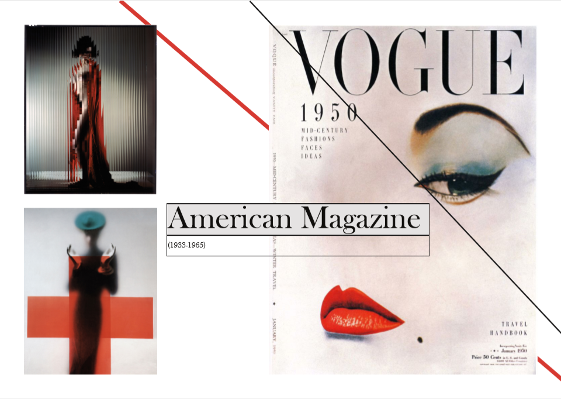

Content

01.01.03
Her skulle jeg udfra stilarten "American Magazine" finde billeder og tekst og sætte det op som en skitse for det stilartsite vi skulle til at udarbejde i HTML. Opgaven løste jeg i InDesign. Jeg lærte hvordan jeg kan bruge InDesign til at udarbeje en skitse og hvordan jeg i InDesign kan linke internt på siden.